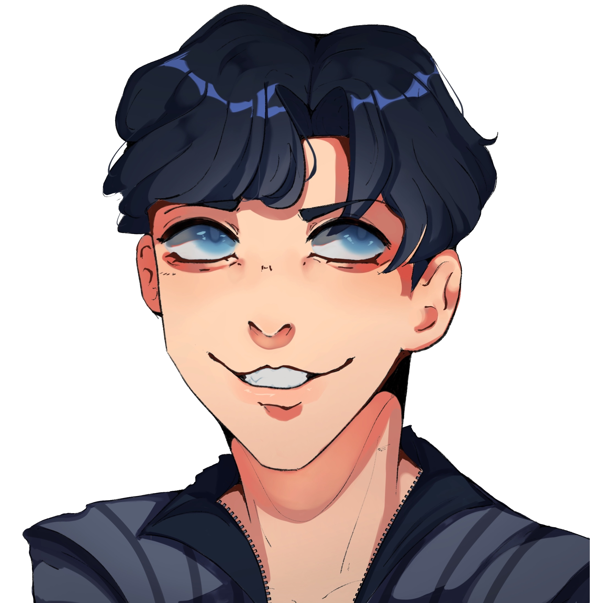
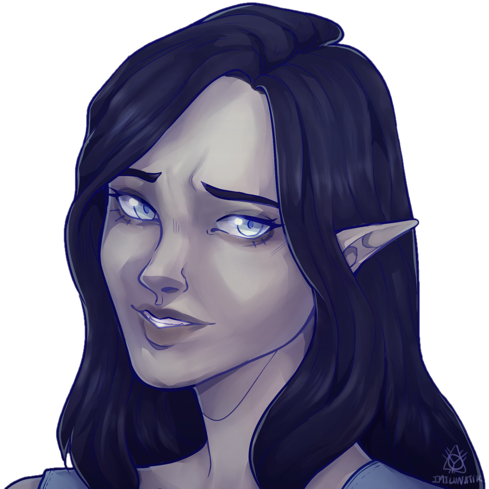

"Missed me?"
Title: The Arrogant Vampire
Full Name: Mason Kendrick
Nicknames: May (Jay), Vampy Boy (Terrin), F'cker (Again, Terrin), Asshole (Still Terrin)
Birthday: July 9th
Age: Early/Mid (1)20's
Race: Natural Born Vampire (Grandmaster Rank)
Height: 5'11" / 180.3 cm
Status: Still Alive somehow
Job: Full-Time Schemer
Affiliations: Mason's Crew (Currently), Villain Lot (Formerly), Jay's Gang (Formerly)
Early Life
Growing up in the early 1900s, Mason was exposed at an early age to the violence that human beings are capable of as he witnessed and suffered personally from the abuse of his Father that he'd inflict on both him and his mom until one day his dad took it too far and murdered his mom right in front of him, permanently scarring him as it imprinted this behavior into his mind.
Current Life
After having been beat again and again by the hands of Eren and his lackeys, he devises a secret plan involving all those he has affected over the course of his life.
Personality
An over the top vampire with his head so far up there he lacks any sense of respect or genuine care for people and sees them as his personal playthings, even if he gets knocked down again and again, he just keeps coming back for more. Abandoned, Abrasive, and Abusive, he is a definitive pain in the neck as a result of his upbringing and oblivious overconfidence to see any truth that isn't from his own book of rules.
Skills
Natural Immunity to Sun, Can turn into a Bat or into Mist, Has super speed, Can emit brainwashing fog, Can trance/hypnotize people, Can cast hallucinations, Wears a steel plated jock strap
Strengths
Physically very capable, Great at manipulating people, Extremely agile if he focused
Weaknesses
Terrin, Promises of easy money, Semi easy to trick by playing dumb, Extremely overconfident
Hobbies
Harassing Aiden, Annoying Terrin, Stalking people, Finding people to lure and rob or perhaps even more
Loves
Terrin, Women, Secretly Men, Nudity, Sexual Intercourse, Demon Blood, Converting People into Vampires, Himself, Tormenting People
Likes
Pudding/Flan, Normal Human Blood, Vampire Mirrors, Money, When people struggle against him, Black Haired People
Dislikes
Blood Bags, Jay, Being Dead
Hates
Terrin (It's Complicated), Eren and his friends, his plans failing
Physical Looks
Medium Length Blonde Hair, Greyish Pale Skin, Glowing Red Eyes with a Black Sclera
Clothes
Black Military-style Leather Jacket embellished with Stars, White Undershirt and Dark Jeans (Current)
Black Leather Jacket, Tan buttoned up undershirt and Grey Jeans (OG)
White Long Sleeved Blazer, Black Undershirt, Triforce Necklace (Depiction in Old Photos)
"Dear Sweet Ter, how I hate you so."
Status: Super Love/Hate (Mostly Hate)
How they met: As mutual lackeys working under Lucille and Kakage on their Ship where the two managed to hit it off and nearly get it on had it not been the intervention of some.
Personal Sentiments: Mason just can't bring himself to let go of Terrin, no matter how many times she runs away, he just can't resist her. Meanwhile Terrin absolutely hates the hell out of him after he drugged her and took advantage of her, and this was after he also abandoned her at the Bank Heist job.
Extras: Terrin shot him in the end, seemingly ending it all, until his body mysteriously disappeared when the police arrived.

"Run! Run little man, I will always, find you."
Status: Hate him, also hate him, but he loves to mess with him
How they met: Mason meet Aiden by proxy after he investigated the Kensai mystery of his skull and after bringing Kieran back to life, the two tormented Aiden together
Personal Sentiments: There's just something about him that Mason loves to keep poking and prodding around in his mind and brain to mess with him and have his fun. Something about taking advantage of impressionable black haired people just really appeals to him.
Extras: Their "time" together served as awakening something deep down for both parties involved
"Hello little brother."
Status: Spiteful Siblings
How they met: Jay was unaware of Mason's existence until his late teenage years when Mason contacted him saying he's his brother on his father's side and offered him to stay at his place and the rest is history.
Personal Sentiments: After his plans failed, Mason will randomly go out of his way to really spite Jay such as when he kidnapped and turned his girlfriend because he couldn't have Terrin.
Extras: He was originally in Jay's little posse of pranksters until his whole ordeal with trying to turn Jay kinda alienated him from him and his friends.
"Well aren't you a pretty thing?"
Status: Brainwashed and Forgotten
How they met: Mason first met Grace when Jay introduced her to him, they didnt really hit it off.
Personal Sentiments: He thoroughly enjoyed messing around inside both her brain and her body.
Extras: He finds her easily manipulatable due to her vulnerable mind from his messing with her memories

"If it weren't Eren and his lackeys..."
Status: Hates him for "stealing" Terrin from him, and also how he keeps stopping his plans
How they met: Mason met him by chance when Eren and his friends infiltrated the ship, although they hardly a chance to properly talk as the police were already on their way.
Personal Sentiments: Really hates his guts and blames him as the reason why Terrin left him
Extras: Despite this hatred, he for some reason never does anything to him (Mainly cause they're both my characters)
- Almost holds the record for the most times a villain has died and came back.
- He's dead. alive. dead? alive.
- He really went "Dying is mega gay" and revived, again, and then again. Somebody put him down for good already!